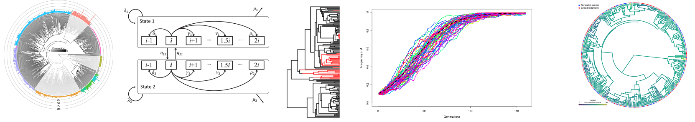

TAMU PhyloHack
What are phylogenetic comparative methods?
Phylogenetic comparative methods are statistical approaches to analyzing data that includes multiple species. These approaches are fundamental to our understanding in genetics, evolution, and ecology.
What is PhyloHack
The TAMU PhyloHack is a hackathon focused on teaching attendees to apply the latest comparative methods to real datasets. PhyloHack will be a two day event (Saturday and Sunday) where teams of attendees will work to analyze provided datasets. Atendees will compete in a begineer and advanced category and prizes will be given to the top team in each category.
Schedule
Date: TBD (dependent on widespread vaccination availability)Location: ILSB Auditorium
| Saturday Morning | |
| 8:30-9:00 | Breakfast, registration, and setup |
| 9:00-10:00 | Introduction to PhyloHack |
| 10:15-11:30 | Handling comparative data in R |
| 12:00-1:00 | Lunch |
| Saturday Afternoon | |
| 1:00-2:00 | APE |
| 2:00-3:00 | Phytools |
| 3:00-4:00 | Geiger |
| 4:00-6:00 | Team work time |
| Sunday Morning | |
| 8:00-9:00 | Breakfast and team work time |
| 9:00-10:00 | New approaches in comparative methods |
| 10:00-1:00 | Teamwork and lunch |
| Sunday Afternoon | |
| 1:00-3:00 | Teamwork |
| 3:00-5:00 | Presentations |
| 6:15-6:30 | Awards presentations |
For more information email Dr. Blackmon.
Preparation
A laptop with R and Rstudio will be required for participation. Attendees are welcome to bring any additioinal computing resources that they would like to use and the hackathon will occur in a room with abundant power outlets for all teams. Breakfast, lunch, and drinks will be available on both Saturday and Sunday.R packages to install prior to hackathon:
phytools, geiger, ape, diversitree, and coda